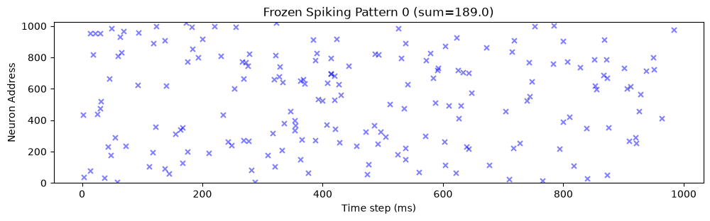
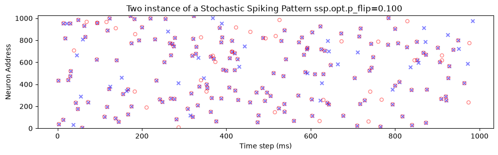

Generative model for spiking targets¶
This notebook defines the motifs that every downstream notebook (11 onward) trains the HD-SNN to memorise and retrieve. Two generators, both defined in mnesis_chains.py, are instantiated here:
``SpikingPattern`` - a frozen raster drawn once from a Bernoulli process at rate
p_A;``StochasticSpikingPattern`` - the same frozen raster, but each call returns a new realisation whose bits are balanced-flipped with probability
p_flip, so the mean firing rate is exactly preserved.
Notebook summary¶
Pipeline¶
Build the frozen pattern and check its shape and sparsity.
Raster-plot one motif of the frozen pattern.
Re-instantiate the stochastic generator; verify that the frozen target never changes, that the flip rate is
p_flip, and that realisations keep the same spike count.
Main outputs¶
rasters
frozen,ssp_frozen_pattern(debug only) andtwo_ssp, saved to../figures/whenfigpathis active (auto-disabled on the Jean Zay cluster);no learned weights here: the caches
*_init.pth/*_vanilla.pthare produced in notebook 11.
Notes¶
Cells guarded by
DEBUG > 1are silent in production (DEBUG = 1); setDEBUG > 1inmnesis_boilerplate.pyto enable them (e.g. the imshow and p_flip-sweep cells).
[ ]:
# All shared machinery (torch, plotting helpers, Params, ...) is re-exported by
# mnesis_boilerplate.py; the pattern generators and HD_SNN by mnesis_chains.py.
# Notebooks stay import-only: no shared code is duplicated here.
from mnesis_boilerplate import np, plt, splt, DEBUG, Params
from mnesis_boilerplate import printfig
from mnesis_chains import StochasticSpikingPattern, SpikingPattern
datetag = '2026-08-06'
Using device: mps
The frozen pattern generator (SpikingPattern)¶
SpikingPattern.init(opt) draws the whole population once, with a dedicated torch.Generator seeded on opt.seed, so the frozen target is fully reproducible; __call__() thereafter returns that same tensor untouched - the motif is a stable memory trace, not a renewed random draw.
[2]:
sp = SpikingPattern()
sp.desc
[2]:
'Frozen Spike pattern generator'
[3]:
# The Params dataclass (mnesis_boilerplate.py) is the single source of hyperparameter truth.
# Fields that matter for the pattern itself:
# N_pattern (number of motifs) x N_neuron (neurons) x N_time (time bins) = raster shape,
# p_A (Bernoulli firing rate per neuron per time bin), p_flip (stochasticity), seed.
opt = Params()
opt
[3]:
Params(datetag='2026-08-06', N_neuron=1024, num_delay=41, N_pattern=16, N_time=1000, N_pretime=50, p_A=0.00016, p_flip=0.01, seed=2018, lif_beta=0.8, lif_threshold=0.72, learn_beta=False, learn_threshold=False, do_pinv=True, do_deconv=True, num_epochs=256, num_warmup_epochs=16, base_lr=0.03, final_lr=0.001, delta1=0.01, delta2=1e-05, dropout=0.25, alpha_surrogate=5.0, surrogate_name='FastSigmoid', loss_name='SpikeF1scoreLoss', reset_mechanism='subtract', optimizer='sgd', verbose=False, fig_width=30, fig_height=15, phi=1.61803, N_time_show=1000, N_neuron_show=1024, N_scan=36)
[4]:
# init() draws one Bernoulli(p_A) spike per (motif, neuron, time bin) entry with a
# generator seeded on opt.seed -> the frozen_target is reproducible across runs.
sp.init(opt)
sp.frozen_target.shape
[4]:
torch.Size([16, 1024, 1000])
[5]:
sp().shape, sp().device
[5]:
(torch.Size([16, 1024, 1000]), device(type='mps', index=0))
[6]:
pattern = sp()
pattern.shape, pattern.mean()
[6]:
(torch.Size([16, 1024, 1000]), tensor(0.000, device='mps:0'))
Raster convention¶
All MNESIS rasters are plotted transposed, i.e. (N_time, N_neuron) with the time axis (in ms) horizontal and the neuron address vertical, for the reference motif i_pattern = 0, cropped to N_time_show x N_neuron_show. The spike count printed next to the shape is the per-motif total, to compare with the analytic expectation p_A * N_neuron * N_time (~164 spikes per motif at production parameters).
[ ]:
fig, ax = plt.subplots()
splt.raster(pattern[opt.i_pattern, :opt.N_neuron_show, :opt.N_time_show].T, ax, s=25, facecolor='blue', edgecolor='none', marker='x', alpha=.5)
ax.set_xlabel("Time step (ms)")
ax.set_ylabel("Neuron Address")
ax.set_ylim(-1., opt.N_neuron_show + 1.)
ax.set_title(f"Frozen Spiking Pattern {opt.i_pattern} (sum={pattern[opt.i_pattern, :, :].sum().item()})")
printfig(fig, 'frozen', fig_width=opt.fig_width, fig_height=opt.fig_height/2, figpath=None)
pattern.shape, pattern[opt.i_pattern, :opt.N_neuron_show, :opt.N_time_show].sum().item(), pattern[opt.i_pattern, :, :].sum().item()
/Users/laurent/sdrive_cnrs/hot_from_git/TemporallyHeterogeneousConnections/MNESIS/.venv/lib/python3.12/site-packages/snntorch/spikeplot.py:120: UserWarning: You passed an edgecolor/edgecolors ('none') for an unfilled marker ('x'). Matplotlib is ignoring the edgecolor in favor of the facecolor. This behavior may change in the future.
return ax.scatter(*torch.where(data.cpu()), **kwargs)
(torch.Size([16, 1024, 1000]), 189.0, 189.0)

The stochastic pattern generator (StochasticSpikingPattern)¶
A realisation is produced by balanced bit flipping (see the flip_bits function in mnesis_boilerplate.py): each entry of the frozen target is selected with probability p_flip; a selected entry is then re-sampled from Bernoulli(mean(raster)) rather than simply negated. The marginal rate is thus preserved while the spatio-temporal structure is decorrelated. These realisations are the data augmentation of the training loop (notebook 11) and the retrieval-noise probe of
notebooks 14-16.
TODO : use a LIF to filter the signal in order to get more realistic spiking patterns
[8]:
# Fresh Params + fresh generator: init() re-draws the frozen target from the same seed,
# so this is the same memory trace as sp.frozen_target; only the realisations vary.
opt = Params()
ssp = StochasticSpikingPattern()
print(f'Description: {ssp.desc}')
ssp.init(opt, verbose=DEBUG)
Description: Stochastic spike pattern generator
Target pattern generated with shape torch.Size([16, 1024, 1000]) and mean 1.605e-04
[9]:
# The frozen target is a 0/1 tensor whose mean is the empirical firing rate (~p_A).
frozen_target = ssp.frozen_target
frozen_target.shape, frozen_target.min().item(), frozen_target.max().item(), frozen_target.mean().item()
[9]:
(torch.Size([16, 1024, 1000]), 0.0, 1.0, 0.0001605224679224193)
Showing the target pattern (should not change when calling the generative model):
[ ]:
if DEBUG >1:
fig, ax = plt.subplots()
im = ax.imshow(frozen_target[opt.i_pattern, :opt.N_neuron_show, :opt.N_time_show].cpu().T)
plt.colorbar(im, ax=ax)
ax.set_xlabel("Time step (ms)")
ax.set_ylabel("Neuron Address")
ax.set_ylim(-1., opt.N_neuron_show + 1.)
printfig(fig, 'ssp_frozen_pattern', fig_width=opt.fig_width, fig_height=opt.fig_height, figpath=None)
frozen_target.shape, frozen_target[opt.i_pattern, :opt.N_neuron_show, :opt.N_time_show].sum().item(), frozen_target[opt.i_pattern, :, :].sum().item()
[11]:
ssp.opt.p_flip
[11]:
0.01
Draw two instances of a pattern:
Sensitivity of the realisations to p_flip¶
Sweep of p_flip from 0 (faithful copy of the frozen target) to 1 (target fully re-randomised while keeping its rate). Because the flip is balanced, the total spike count stays constant across the sweep - only the overlap with the frozen target decays.
[12]:
if DEBUG >1:
# verification that out frequency is kept constant while the pattern is stochastically modified
for p_flip in np.linspace(0.0, 1.0, 13):
print(f'{p_flip=:2e}', end=' - ')
opt = Params(p_flip=p_flip)
ssp = StochasticSpikingPattern()
ssp.init(opt, verbose=False)
print(f'p_flip={p_flip:.2e} (={ssp.opt.p_flip:.2e}) - Spike count: {ssp.frozen_target.sum().item():.2f} spikes, mean={ssp.frozen_target.mean().item():.3e}')
Two realisations of the same motif¶
verbose=True prints, for each draw, how many bits were selected for flipping and the rate before vs after a naive toggle: the logged 1.605e-04 -> 1.002e-01 is what the rate would become if selected bits were simply inverted - the returned tensor instead re-samples selected bits from Bernoulli(mean), so the rate stays at p_A.
Markers: solid blue x = first realisation, open red o = second realisation of the same motif.
[ ]:
if DEBUG > 0:
opt = Params(p_flip=.1)
ssp = StochasticSpikingPattern()
ssp.init(opt, verbose=DEBUG)
# two independent realisations of the *same* frozen motif (verbose logs the flips)
pattern = ssp(verbose=True)
pattern2 = ssp(verbose=True)
fig, ax = plt.subplots()
splt.raster(pattern[opt.i_pattern, :opt.N_neuron_show, :opt.N_time_show].T, ax, s=25, facecolor='blue', edgecolor='none', marker='x', alpha=.5)
splt.raster(pattern2[opt.i_pattern, :opt.N_neuron_show, :opt.N_time_show].T, ax, s=25, facecolor='none', edgecolor='red', marker='o', alpha=.5)
ax.set_xlabel("Time step (ms)")
ax.set_ylabel("Neuron Address")
ax.set_ylim(-1., opt.N_neuron_show + 1.)
ax.set_title(f"Two instance of a Stochastic Spiking Pattern {ssp.opt.p_flip=:.3f} ")
printfig(fig, 'two_ssp', fig_width=opt.fig_width, fig_height=opt.fig_height/2, figpath=None)
pattern2.shape, pattern2[opt.i_pattern, :opt.N_neuron_show, :opt.N_time_show].sum().item(), pattern2[opt.i_pattern, :, :].sum().item()
Target pattern generated with shape torch.Size([16, 1024, 1000]) and mean 1.605e-04
Flipping 1639412.0 bits out of 16384000 (p_flip=0.1, flip seed=5300150403830789851), 1.605e-04 -> 1.002e-01
Flipping 1638902.0 bits out of 16384000 (p_flip=0.1, flip seed=13971697001389695227), 1.605e-04 -> 1.002e-01
